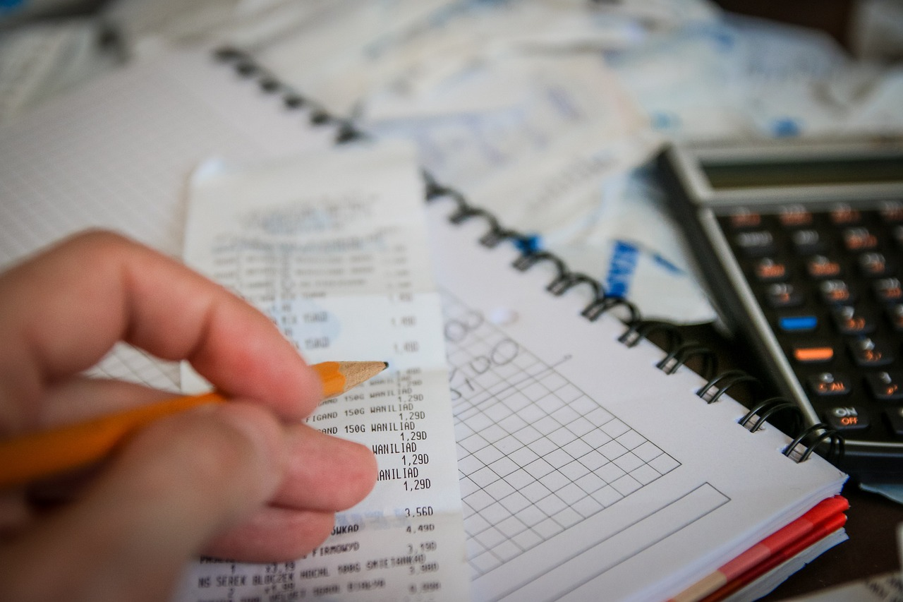

Cómo ahorrar de manera efectiva
Publicado el 18 de mayo de 2025 Ahorrar no es solo cuestión de cuánto ganas, sino de cómo gestionas lo que tienes. Muchas personas creen que no pueden ahorrar simplemente porque no les sobra dinero. La realidad es que el ahorro empieza con el hábito, no con la cantidad. Aquí te mostramos cómo ahorrar de manera efectiva sin tener que hacer grandes sacrificios.
1. Crea un presupuesto y síguelo
Sin un plan claro, es casi imposible ahorrar. Establece tu presupuesto mensual y asigna una parte fija al ahorro como si fuera una factura más. No esperes a fin de mes para ver si "queda algo". Ahorrar debe ser una prioridad.
2. Automatiza el ahorro
Configura una transferencia automática desde tu cuenta corriente a una cuenta de ahorro justo el día que cobras. Así no verás ese dinero y evitarás gastarlo por impulso. La automatización es una de las claves del éxito financiero.
3. Elimina los “gastos hormiga”
Cafés diarios, snacks, apps, envíos rápidos, suscripciones que ni usas... estos pequeños gastos pueden sumar más de 100€ al mes. Sé consciente de ellos y elimínalos sin que tu calidad de vida se vea afectada.
4. Utiliza la regla del 24 horas
Si ves algo que te gusta pero no es urgente, espera 24 horas antes de comprarlo. La mayoría de las veces te darás cuenta de que no lo necesitas realmente. Esto ayuda a frenar el consumo impulsivo.
5. Define metas claras de ahorro
Ahorra con propósito: un viaje, un coche, un fondo de emergencia o incluso la entrada de una casa. Tener un objetivo definido te motiva más que un simple “ahorrar por ahorrar”. Usa imágenes, metas mensuales y seguimiento visual.
6. Aprovecha los descuentos e inteligencias de consumo
Compra al por mayor, usa apps de cashback, cupones, precios comparativos, y no compres lo primero que veas. También revisa los días de descuento de supermercados y plataformas online.
7. Revisa tus servicios contratados
¿Necesitas realmente tantos gigas en el móvil? ¿Podrías bajar la velocidad del internet? ¿Hay bancos sin comisiones? Renegocia tus servicios, cancela lo innecesario y optimiza lo que sí usas.
Conclusión
Ahorrar no es un acto puntual, es un estilo de vida. No necesitas ser un experto ni tener un gran sueldo. Con constancia, un poco de organización y mentalidad financiera positiva, podrás crear un hábito que te cambiará la vida. Empieza hoy, con lo que tengas.
← Volver a artículos